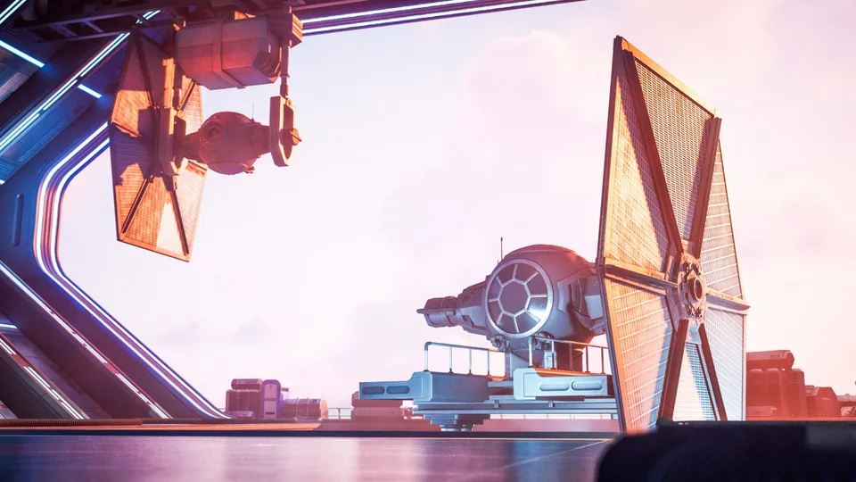
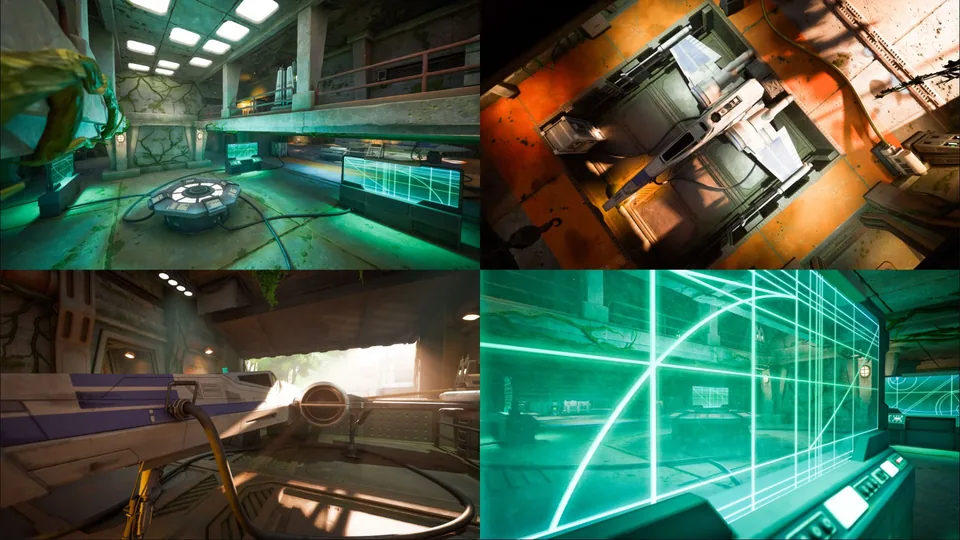
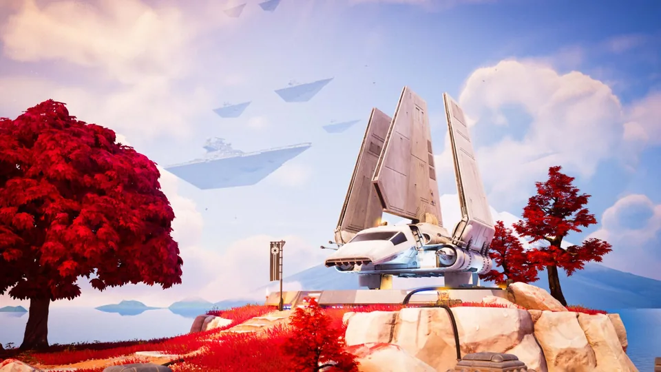
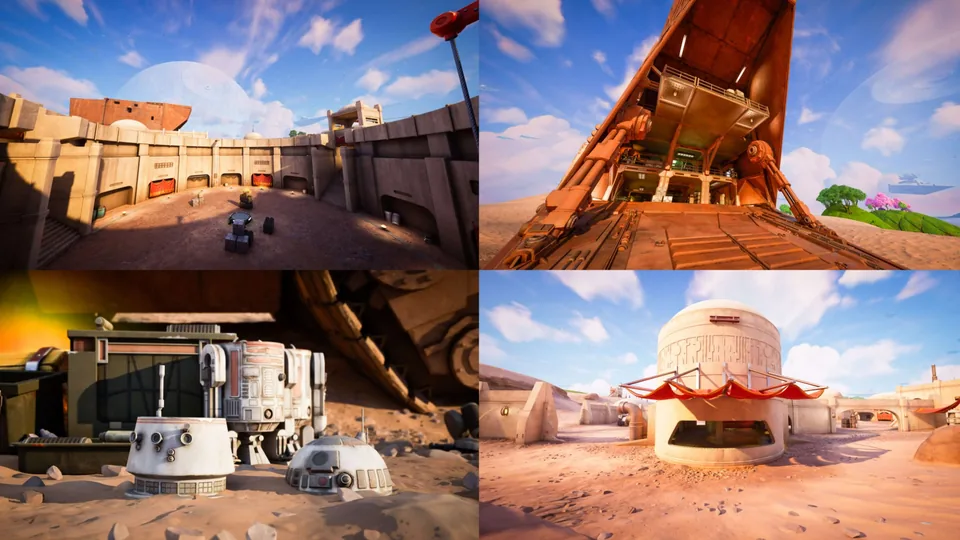

// Fortnite — Galactic Battle · Official season trailer · Courtesy of IGN
Ambient audio on Fortnite's Galactic Battle season. A set of locations I owned outright, plus a wider pass across the island making the new areas sit properly against everything already there.
// Working With Licensed Source Material
This season ran on original source content supplied by the licensor, and that changes how you work before you've opened a single session.
Material like that arrives with conditions attached. Where it is allowed to live, who can open it, what can leave the building, what can be shown and when. None of it is negotiable, and none of it is interesting to talk about, which is rather the point. The measure of having handled it properly is that there is nothing to report. Nothing leaked, nothing appeared early, nothing ended up somewhere it shouldn't have.
It's worth saying plainly because it's the part of a credit that never shows up in a reel. Bringing someone in on licensed IP means handing them material that belongs to somebody else, under an agreement you have signed and they haven't. Being straightforward to trust with it is part of the job, and it is a large part of why the same people get asked back.

// The Locations
Four locations carried the Star Wars identity that season. First Order Base, Resistance Base, Vader Samurai's Solitude and Outpost Enclave.
Three of those were mine end to end. On Outpost Enclave a colleague did the main thrust, setting up the volumes and interiors, and I worked alongside him fixing bugs and helping get it singing. That's how the good ones tend to go. One person owns it and knows every inch of it, another comes in with fresh ears and no attachment to any of the decisions, and the location ends up better than either of you would have managed on your own.
First Order Base and Resistance Base are the interesting pair, because they had to read as opposites the moment you landed in either one, without either of them leaning on the obvious.
First Order Base Owned

Snow, stone and hard metal. The base is cut into a mountainside, so the exterior carries weather and exposure while the interior is all flat surfaces and enclosed air, and the two need to be obviously different the moment you cross the threshold.
Interiors like this are the easiest place to get ambience wrong, because the temptation is to fill them. A corridor that hums everywhere at the same level stops sounding like a corridor and starts sounding like a wall of noise. The interior beds sit low and the emitters do the shaping, so walking deeper into the base gets quieter and tighter rather than busier.
The hangar is the exception. It's the one space that earns scale, with the volume above you and hard surfaces on every side, so it's the place where the wrap of a quad bed does real work rather than being spent on a room nobody lingers in.
Resistance Base Owned

The opposite problem, and the more interesting one. Where the First Order is machined and cold, the Resistance is dug into a green valley, improvised, and surrounded by a living biome that was already on the island long before this season arrived.
That existing biome is the constraint. The base has to sound like it was put there by people working with what they had, inside a landscape that carries on regardless. So the exterior beds lean on what was already established and the new material sits underneath it, with the technology audible but never loud enough to push the valley out of the way.
Inside is where it flips. Step into the tunnels and the biome drops away and you're left with the equipment, which is where the pitched and filtered source content does most of its work, building out consoles and machinery that have no canonical sound of their own but still have to read as belonging.
Vader Samurai's Solitude Owned

The one with the most restraint in it. A shuttle set down on a rocky outcrop among red maples, more shrine than base, and the whole point of the place is that it's quiet.
Quiet is harder than busy. With nothing much running you have very little to hide behind, so every emitter has to earn its place and any loop that repeats audibly will be noticed within seconds. The bed is thin on purpose and the detail is sparse and widely spaced, which means the placement has to be right rather than approximately right.
It also has to hold two ideas at once, the Japanese-inflected setting the chapter had already established and the Imperial hardware sitting in the middle of it, without either one cancelling the other out.
Outpost Enclave Collaboration

A desert settlement of domes and scrap, the most lived-in of the four. This one wasn't mine. A colleague set up the volumes and interiors and did the main thrust of the design, and I came in alongside him to fix bugs and help get it singing.
That's a genuinely different job from owning a location. You're arriving in someone else's work with no attachment to any of the decisions, which is exactly what makes the second pair of ears useful. You hear the join they've stopped hearing, the emitter that reads fine from the approach they always take and wrong from the one they never do.
The trick is to fix what's broken without quietly redesigning it around your own preferences. It was his location and it should sound like his location, only without the problems.
// Approach
Owning a location means deciding what it sounds like when nothing is happening. That's the part nobody consciously notices and everybody notices the absence of. What is the air doing. What machinery is running, and how far away. What is overhead. Is there water, wind, anything alive, and how does all of that change as you move through the place rather than past it.
The wider pass is a different problem. Fortnite's island isn't a set of separate levels, it's one continuous space that players cross at speed. Drop a new area into it and it has to belong. It can't announce itself with a hard edge where one ambience stops and the next starts, because somebody sprinting that boundary will hear the join, and once you've heard a join you can't unhear it.
That's the constraint that shapes everything else. You aren't mixing a location, you're mixing every possible route a player might take through it, including the ones that cut straight across a seam you'd rather they didn't.
// Tools & Pipeline
Built in Unreal from hand-placed emitters and audio volumes rather than anything generated. Slower, but it's the only way to get intent into a space.
// Ambience · Layer Stack
The emitters are what separate a place from a texture. Because each one sits at a real position with its own falloff, moving through the space changes what you hear for the honest reason that you are nearer one thing and further from another. A looping stereo bed can't do that. It sounds the same standing still as it does running, and players read that instantly even if they couldn't tell you why.
Most of it is walking
The real work is iteration in engine. Place something, play, walk it, move it, walk it again. You can't judge an ambient mix from a DAW, because the thing being mixed isn't a piece of audio, it's a player's path through a space, and there are as many paths as there are players.
So you walk the boundaries deliberately, looking for the joins. You approach each location from every direction it can be approached from, including the stupid ones, because on a map this size somebody will land on the roof and drop straight in through the middle of it.
What we were allowed to build from
The rule on this season was that everything had to come from the original source content. No substituting a library recording because it was quicker, no building a hum from a synth because it got you there faster. If it ended up in the game it started life in the material we were given.
That's a tighter brief than it sounds. Original source content is decades old in places, recorded and mastered for cinema rather than for a game engine, and a lot of it does not survive being dropped into a world where it has to compete with everything else going on and still read through a phone speaker.
So cleaning and polishing was allowed and necessary. Denoising and limiting to get the recordings behaving, then spectral enhancement through Ozone 12 to brighten the top end. That last part matters more than it sounds. A recording can be perfectly good and still sit dull once it's inside the engine competing for the same space as everything else, and a bit of top end is what buys it translation across the range of systems people actually play on, from a full setup down to a handset.
Editing gave us more room. We could pitch and filter the source material to generate new tones, which is how you build out the technology of a space that doesn't have a canonical sound of its own. A door, a console, a piece of machinery nobody has heard before, all derived from something that already existed. Take an original tone, move it and shape it, and what comes out is a new sound that still carries the character of where it came from. That's the whole reason the method works, and it's why the results go on belonging in the universe rather than sitting next to it.
Beds and transitions
From the polished material we built quad and stereo ambient beds covering every area of each location. Quad where the space needed to wrap around the player properly, stereo where it didn't need to and the budget was better spent elsewhere.
Then the interior and exterior transitions, which is where a new area either joins the island or doesn't. These places weren't dropped onto empty ground. They sit inside biome ambience established seasons earlier, which is already running and already familiar to anyone who plays regularly. So the beds had to be mixed against what was already there rather than over the top of it, and the boundaries had to be worked until stepping in or out of a structure reads as a change in the space rather than a change in the audio.